Un thème par jour, une scène par thème. Chaque scène est entièrement calculée — simulation, mathématiques, géométrie générative — rendue en lumière physique, et tourne en boucle parfaite. Une graine, une scène : chaque visite peut en tirer une nouvelle.
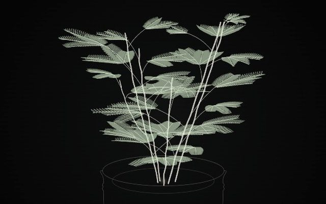
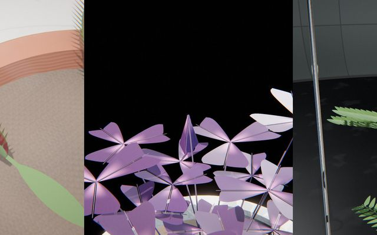
La feuille qui se replie
Un choc, et toute la plante se ferme : signal propagé sur le graphe de la plante, pli sans interpénétration.
version légèredocumentation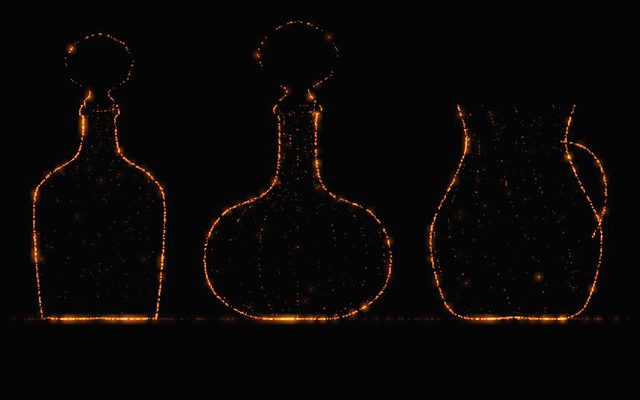
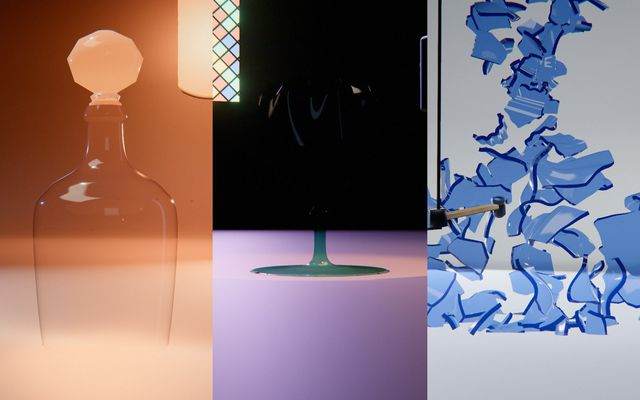
Le verre brisé, refondu, soufflé, brisé
Une pièce de verrier monte du bain, se brise en caméra rapide, et ses éclats refondent : fracture exacte.
version légèredocumentation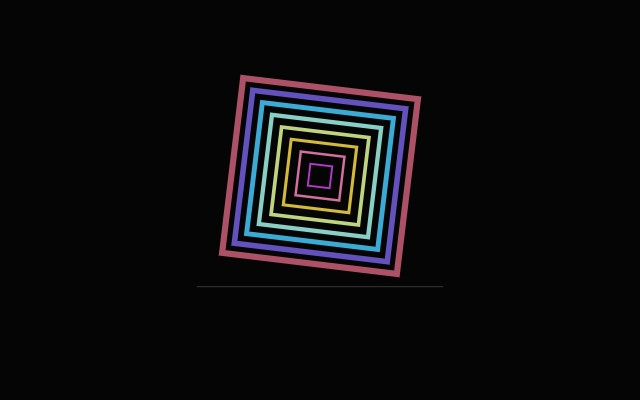
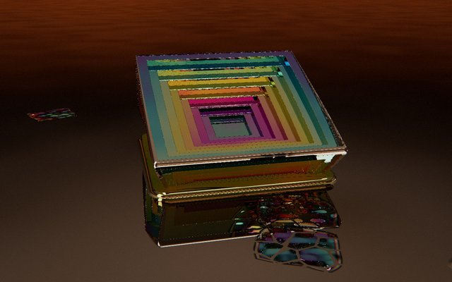
Le dégel d’une étoile
Un cristal de neige pousse, puis fond en perles qui remontent vers son cœur : croissance de Gravner-Griffeath.
version légèredocumentation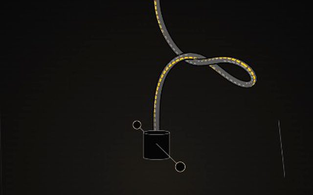
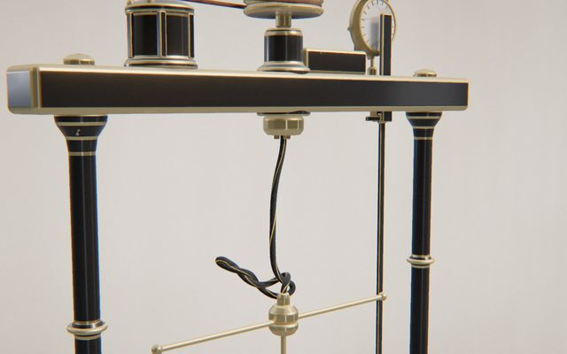
Le tour de trop
Une corde tordue tour après tour fait soudain une boucle, puis tout se démêle : tiges de Cosserat, Lk = Tw + Wr.
version légèredocumentation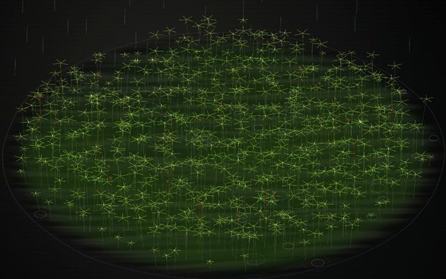
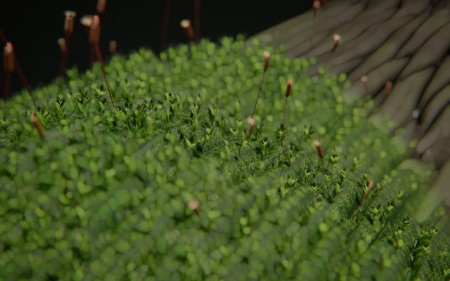
La reviviscence
Une année de mousse sur sa pierre : réfugiée dans les fissures, elle reverdit à l’averse — Fisher-KPP au fil des saisons.
version légèredocumentation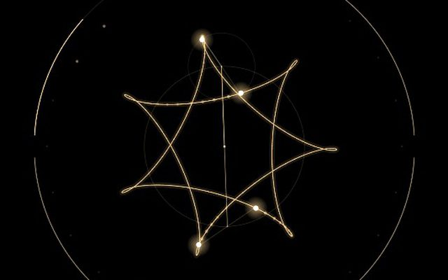
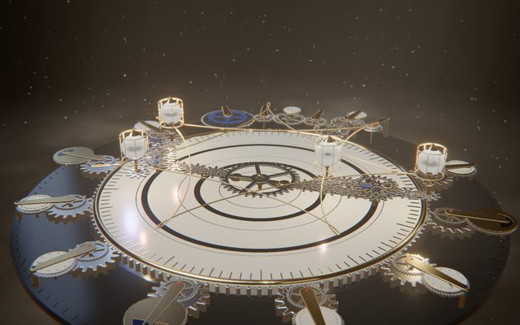
La chorégraphie des astres
Chaque graine trouve une orbite inédite du problème à N corps, et la machine à engrenages qui la trace.
version légèredocumentation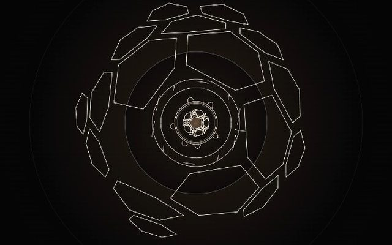
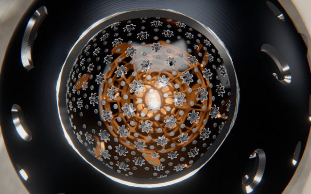
La plongée sans fond
Des coquilles creuses emboîtées à l’infini, chacune vue par l’oculus de la précédente.
version légèredocumentation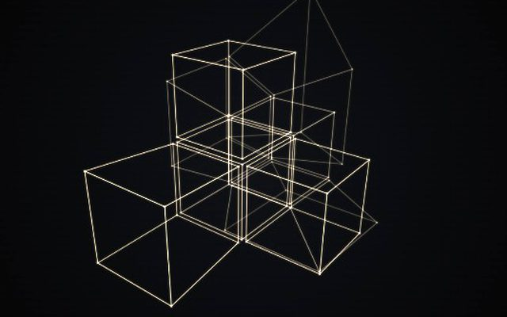
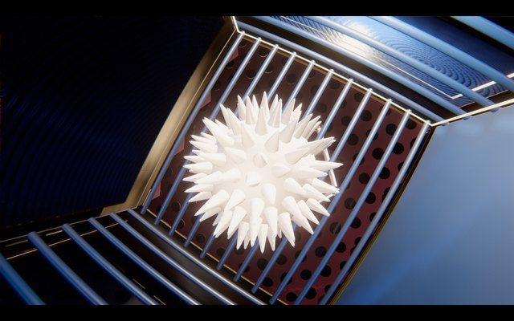
L’écrin qui se replie en hypercube
Huit cubes se replient en hypercube, puis la caméra y voyage de pièce en pièce au fil des rotations 4D.
version légèredocumentation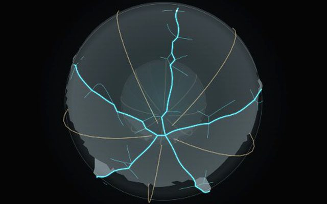
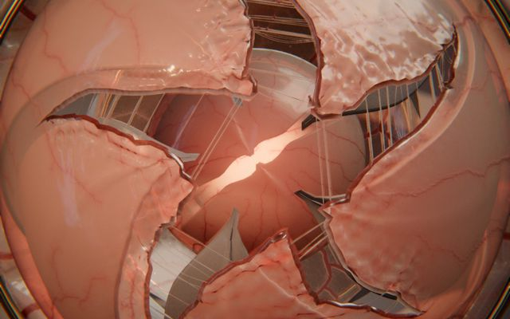
L’éclosion sans fin
Des membranes vascularisées se tendent et se déchirent sur leur armature, simulées sur le GPU.
version légèredocumentation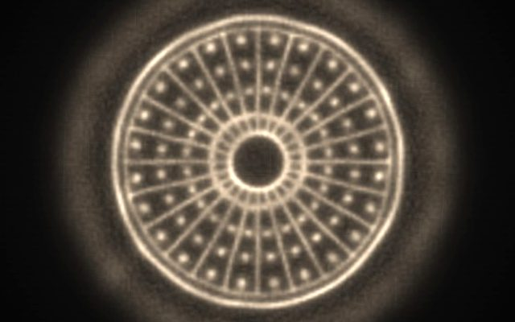
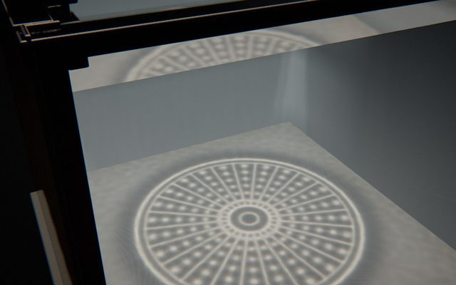
Le foyer des ondes
Des ondes convergent et la surface devient une lentille : la caustique dessine une diatomée — transport optimal.
version légèredocumentation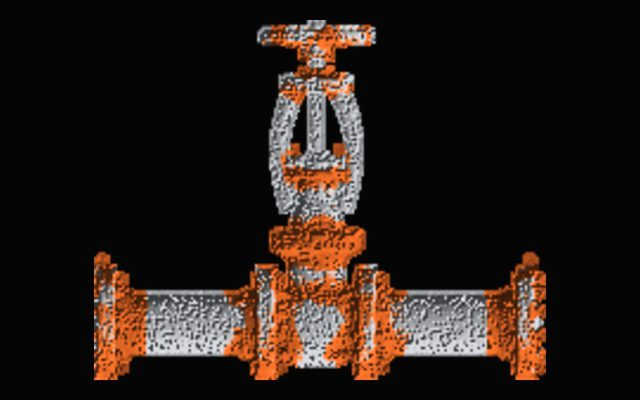
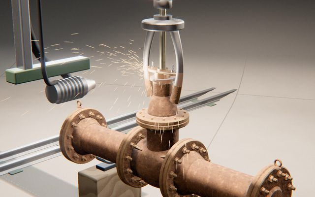
La remise à nu
Une pièce rivetée rouille sous les averses d’une saison, puis une machine la décape — corrosion calculée sur la géométrie.
version légèredocumentation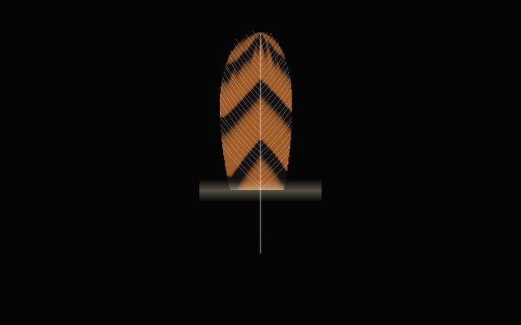
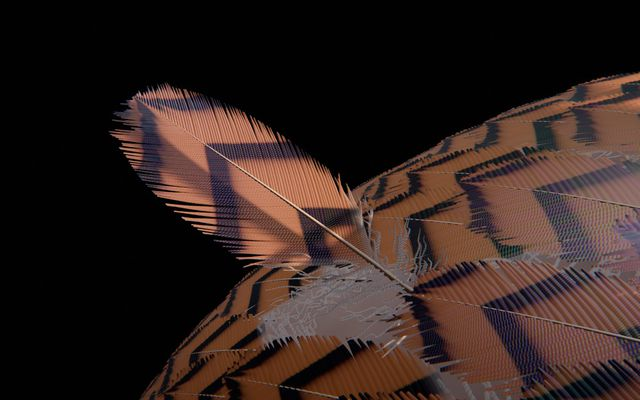
La plume en tuyau
Une plume sort roulée dans sa gaine et se déroule sans s’étirer : croissance dans le collier, motif par réaction-diffusion.
version légèredocumentation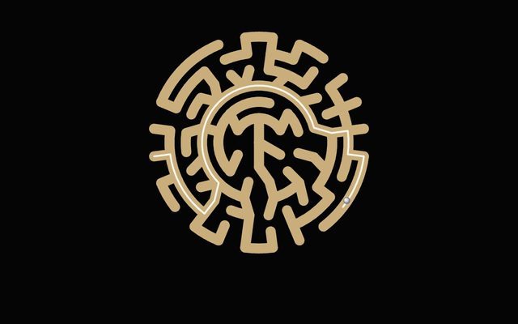
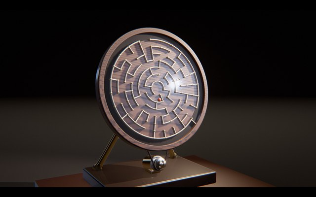
Le dédale qu’on retourne
Un automate incline ou fait tourner le labyrinthe et la gravité conduit la bille : arbres couvrants de Wilson, roulement simulé, rotations trouvées par recherche en largeur.
version légèredocumentation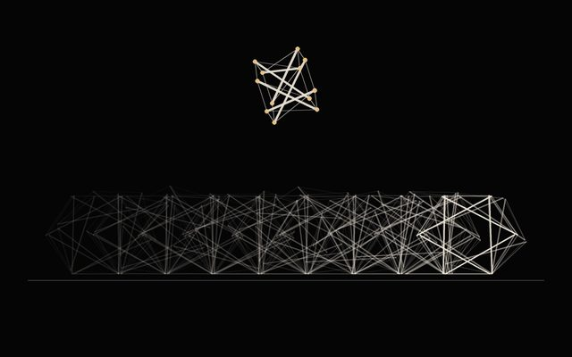
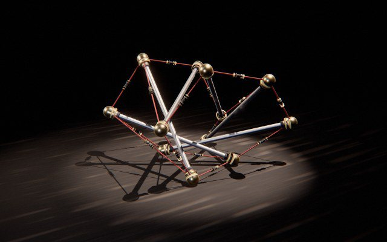
Ce qui tient ne pousse pas
Des tenségrités avancent en enroulant leurs propres câbles : barres rigides et câbles unilatéraux simulés, culbutes trouvées par symétrie, cycle limite refermé par point fixe.
version légèredocumentation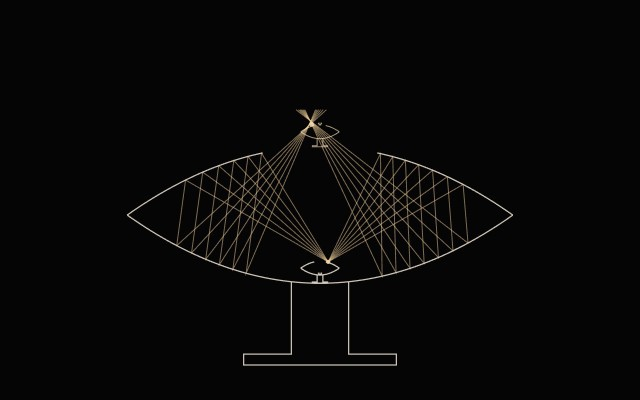
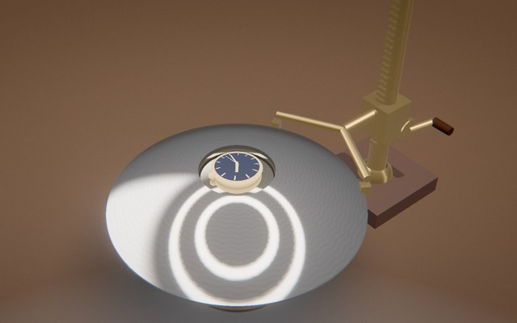
L’objet qui n’est pas là
Un mirascope au fond d’un mirascope — argent, cloisonné, laque, cuivre ou nacre. Une coupe s’ouvre dans le couvercle : on voit le vrai petit posé au fond et son image qui flotte au-dessus de l’ouverture ; puis la caméra plonge dans l’image, sans fin.
version légèredocumentation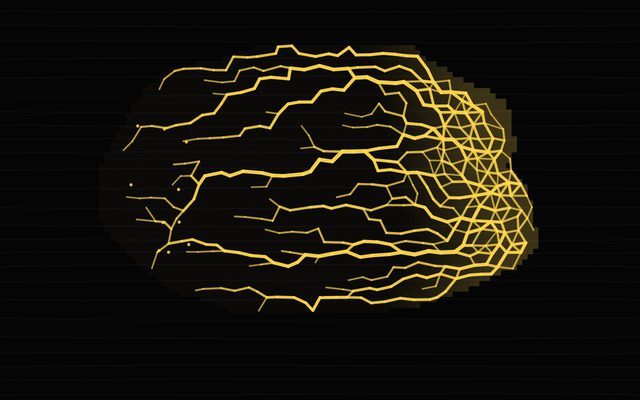
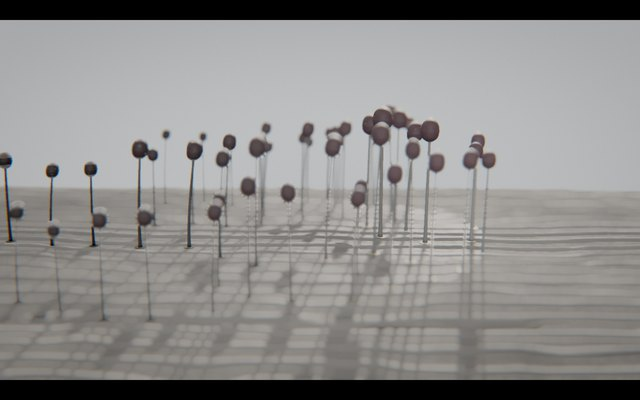
Le relais
Sur du bois mort, une poussière de spores germe en un plasmodium qui s’étend en réseau, se condense en perles et se dresse en une forêt de sporanges ; au souffle, ils s’ouvrent, et la caméra suit le nuage jusqu’au site suivant : réseau adaptatif de Tero, perles de Plateau, fumée simulée en 3D qui se dépose, boucle qui est une translation.
version légèredocumentation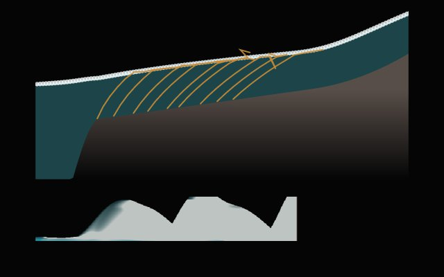
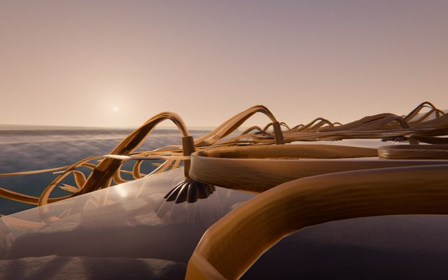
Le ressac
Au ras d’un platier, une caméra à hublot-dôme, moitié au-dessus, moitié au-dessous de l’eau : à chaque vague de la série, les laminaires couchées sur la roche se dressent quand le front les atteint, puis le retrait les recouche : mer de Saint-Venant avec son front mouillé-sec, laminaires XPBD qui flottent et traînent dans le courant, boucle refermée sur une orbite périodique.
version légèredocumentation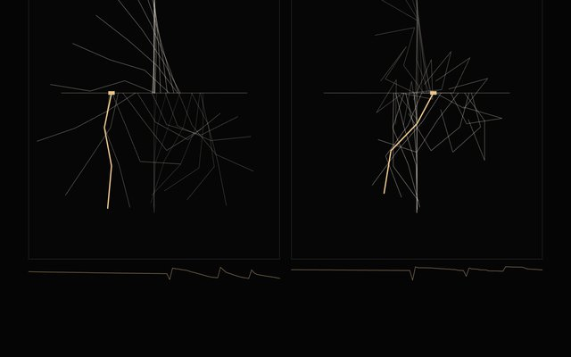
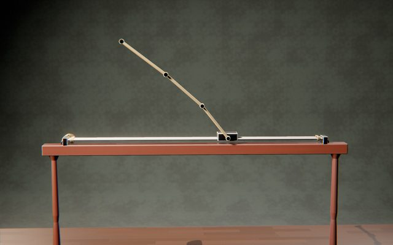
L’équilibre renversé
Un chariot sur son rail, un bras qui tourne, un coude motorisé ou un volant font se dresser une chaîne de pendules, qui reste debout, immobile, à l’envers, puis se replie : redressements trouvés par tir multiple et SQP sur la dynamique exacte d’une chaîne sous-actionnée, bibliothèque et continuation pour la chaîne triple, boucle faite d’équilibres.
version légèredocumentation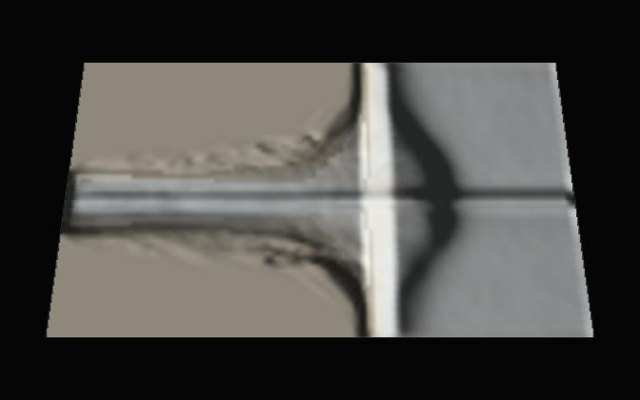
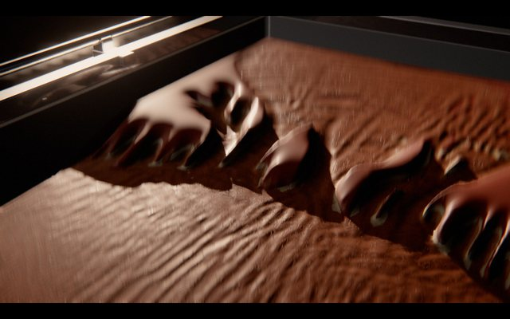
Un paysage d’une heure
Une table à érosion de laboratoire : la pluie, un courant, un lac qui déborde ou un déversoir qui s’abaisse creusent dans un sable stratifié des ravines, un canyon, un delta, une brèche, puis une lame-gabarit repasse le sable : eau peu profonde par tuyaux virtuels et transport de Meyer-Peter–Müller simulés sur le GPU, enregistrés puis relus, boucle refermée par la lame qui réécrit la surface de départ.
version légèredocumentation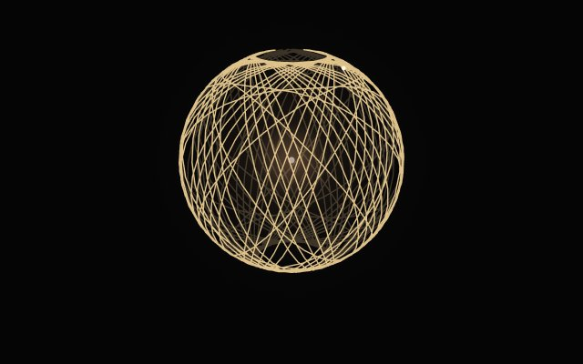
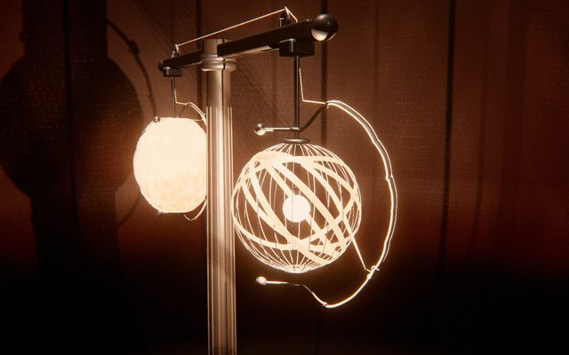
La lumière filée
Deux lanternes-cocons aux bras d’un fléau : un seul ruban de soie quitte l’une, qui se dévide et libère sa lampe, et s’enroule sur la cage de l’autre, qui se referme sur sa lumière ; puis le fléau fait un demi-tour et les échange : géodésiques de Clairaut, fil déposé sans traversée sur une carte de hauteur, paroi qui filtre la lumière fil par fil jusque dans la brume.
version légèredocumentation